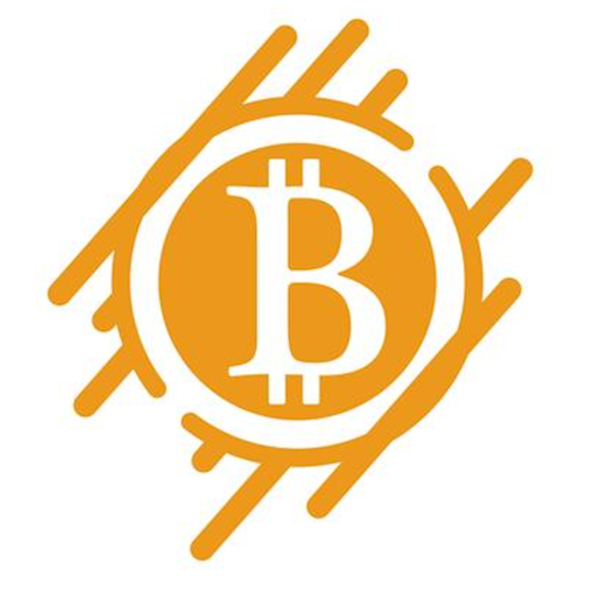

Home
Knowledge
Usage
Shops
Social
Communities
Meetups IRL
Language explained
Events explained
Communities
Community based
v
Overview of communities
v
BTCmap community overview
https://btcmap.org/map?communitiesOnly
Amboss communities
https://amboss.space/community
Honeybadgers
v
Honeybadgers dont care
They are extremely fearless animals. Their not fixed overgrown skin is very thick and lasts even the teeth of predators. Bitcoin has also prevailed against all odds.
Cyberhornets
v
Wow such empty in here
...
Plebnet
v
Telegram
https://t.me/plebnet
Bitcoin Beach
v
Website
https://www.bitcoinbeach.com/
Einundzwanzig
v
Main Telegram
https://t.me/einundzwanzigpodcast
Website
https://Einundzwanzig.space
Einundzwanzig portal
https://portal.einundzwanzig.space/
Einundzwanzig Meme's
https://t.me/einundzwanzig_meme
Einundzwanzig LN P2P Telegram
https://t.me/lnp2pBot
Noderunners
v
Telegram
https://t.me/+BKpuZskbbQoxNWU0
Website
https://noderunners.network/
Nodes Brigade
v
Telegram
https://t.me/nodesbrigade
Satoshi Radio
v
Telegram
https://t.me/SatoshiRadioROF
BitcoinWalk
https://bitcoinWalk.org
NoderunnersRadio
https://t.me/NoderunnersRadio
Bitdevs Berlin
https://bitdevs.berlin/about/
BTC solo mining Telegram
https://t.me/BTC_solo_mining/29351
Project/ Company based
v
LNbits Telegram
https://t.me/lnbits
Bleskomat Telegram
https://t.me/bleskomat
r/bisq
https://www.reddit.com/r/bisq/
Citadel Telegram
https://t.me/runcitadel
Bisq Telegram
https://t.me/bisq_p2p
Coinkite Telegram
https://t.me/coldcard
Start9 Telegram
https://t.me/start9_labs
Blixt Telegram
https://t.me/blixtwallet
Umbrel Telegram
https://t.me/getumbrel
LNDg Telegram
https://t.me/+03YtC6VgBLQxYWYx
Core Lightning (CLN) Telegram
https://t.me/lightningd
Peach Bitcoin Beta Testers Telegram
https://t.me/peachtopeach
Zeus Telegram
https://t.me/zeusLN
Satsback Telegram
https://t.me/satsback
HodlHodl Telegram
https://t.me/HodlHodl
CoinOS Telegram
https://t.me/coinoswallet
Sphinx chat Telegram
https://t.me/joinchat/Fb4OcRo4LrRD6NXfsNdeeQ
Blockstream
https://t.me/blockstream
OBW Telegram
https://t.me/openbitcoinwallet
Samourai Wallet Telegram
https://t.me/SamouraiWallet
Samourai Dojo Telegram
https://t.me/samourai_dojo
Whirlpool Trollbox Telegram
https://t.me/whirlpool_trollbox
Raspiblitz Telegram
https://t.me/raspiblitz
myNode Telegram
https://t.me/mynode_btc
Voltage Discord
https://discord.com/invite/q8XvK9Qwzr
Breez Telegram
https://t.me/breez_lightning
Bitbox Telegram
https://t.me/bitboxwallet
r/BitBoxWallet
https://www.reddit.com/r/BitBoxWallet/
Keystone Telegram
https://t.me/KeystoneWallet
Krux Telegram
https://t.me/SC_Krux
Foundation Telegram
https://t.me/foundationdevices
Lightning Watch Support
https://t.me/lightningwatch
https://t.me/ark_network_community
Forums
v
Makers Bolt
https://makers.bolt.fun/feed
Bitcointalk
https://bitcointalk.org/index.php
Trezor Forum
https://forum.trezor.io/
r/Bitcoin
https://www.reddit.com/r/Bitcoin/
r/BitcoinBeginners
https://www.reddit.com/r/BitcoinBeginners/
r/TheLightningNetwork
https://www.reddit.com/r/TheLightningNetwork/
r/Lightningnetwork
https://www.reddit.com/r/lightningnetwork/
r/BitcoinMining
https://www.reddit.com/r/BitcoinMining/
r/Electrum
https://www.reddit.com/r/Electrum/
r/getumbrel
https://www.reddit.com/r/getumbrel
Nostr
v
Official website
https://nostr.com/
Nostr resources
https://nostr-resources.com/
Critical twitter thread about Nostr
https://twitter.com/level39/status/..
Offline website vanity address generator
https://github.com/ekn394/nostr_vanity_npub..
Simple nostr vanity address generator
https://hitony.com/nostrogen/
Nip-05 service
https://uselessshit.co/nostr/nip-05/
Nostr nests (Like twitter spaces)
https://nostrnests.com/
And many more...
Get me to the top
Meetups IRL
Big conferences
v
North and south america
v
Bitcoinrodeo (Kanada, Alberta)
https://bitcoinrodeo.com/
The Atlanta Bitcoin Conference (USA, Georgia)
https://2022.tabconf.com/
Bitcoin Miami (USA, Florida)
https://www.btcmiami.com/
Bit Block Boom (USA, Austin, TX)
https://bitblockboom.com/
Pacific Bitcoin (USA, Los Angeles, CA)
https://www.pacificbitcoin.com/
Unconfiscatable (USA, Las Vegas)
https://unconfiscatable.com/
Adopting Bitcoin Confernece (El Salvador)
https://adoptingbitcoin.org/2022/
B++ (Mexico, Mexico City)
https://btcplusplus.dev/
Europe
v
The Lightningconference (Germany, Berlin)
https://thelightningconference.com/
BTC++ (Germany, Berlin)
https://btcpp.dev
Bitcoin Amsterdam (Netherland, Amsterdam)
https://b.tc/conference/amsterdam
Breaking Bitcoin (Netherland, Amsterdam)
https://breaking-bitcoin.com/
BTC23 Conference (Austria, Innsbruck)
https://bconf.de/
Advancing Bitcoin Developer conference (GB, London)
https://www.advancingbitcoin.com/
Baltic Honeybadgers (Latvia)
https://baltichoneybadger.com/
BTC prague (Czech Republic, Prague)
https://www.btcprague.com/
The Middle East
v
Lightninghackday (Turkey, Istanbul)
https://lightninghackday.fulmo.org/
Scaling Bitcoin (Israel, Tel Aviv)
https://telaviv2019.scalingbitcoin.org/
Understanding Bitcoin (UAE, Dubai, The Palm, Atlantis)
https://understandingbtc.com/
Africa
v
Afro Bitcoin (Ghana)
https://www.afrobitcoin.org/
Nigeria Bitcoin conference (Nigeria)
https://satoshisjournal.com/
Meetups
v
Meetups Overview (global)
https://ambassadeur.decouvrebitcoin.fr/en/the-map/
https://bitcoin-only.com/meetups
https://bitcointalk.org/index.php?board=86.0
Sortet by community https://btcmap.org/
UK Bitcoin Meetups
https://goo.gl/maps/xEwN8gRdQLej27qU8
Germany, Spain, Portugal, Turkey (Einundzwanzig)
https://einundzwanzig.space/meetups
Polish Meetups
https://dwadziesciajeden.notion.site/
Japan, Tokyo-Bitcoin-Hackers
https://www.meetup.com/Tokyo-Bitcoin-Hackers/
Japan, Kanazawa-Bitcoin-Hackers
https://www.meetup.com/..
Japan, Nagano
https://www.meetup.com/..
Get me to the top
Language explained
Idioms
v
HFSP - Have fun staying poor
This rude phrase is used on people that leave or move away from Bitcoin.
However it is not meant as staying financially poor, but instead as staying mentally poor.
But since most people understand it the first way Bitcoiners like to upset some people with it.
NYKNYC - Not your keys, not your coins
https://onbitcoin.substack.com/p/not-your-keys-not-your-bitcoin..
NYNNYR - Not your node, not your rules
https://www.reddit.com/r/Bitcoin/comments/..
BTFD - Buy the fucking dip
DYOR - Do your own research
Tina - There is no alternativ
DINO - Decentralized in name only
https://news.ycombinator.com/item?id=28719157..
Vires in numeris
https://btcturk.medium.com/what-does-vires-in-numeris-mean-2eedb2d37e2b
Don't trust, Verify!
https://thebitcoinmanual.com/btc-culture/glossary/dont-trust-verify/
Bitcoin fixes this
bitcoin-fixes-this
Fix the money, fix the world
https://leo-mattes.com/what-does-fix-the-money-fix-the-world-stand-for-engl/
Get rekt
https://www.babypips.com/forexpedia/rekt..
https://rekt.news/
Get off zero
https://www.fidelitydigitalassets.com/research-and-insights/getting-zero-bitcoins-role-modern-investment-portfolios
Code is speech
https://www.hks.harvard.edu/publications/code-speech
Slay your heros
https://tomerstrolight.medium.com/dont-tell-me-there-are-no-heroes-in-bitcoin-ca11fd7faccb
Rules without rulers
Bitcoin doesn't need you, but you probably need Bitcoin
Vocabulary
v
FUD - Fear, uncertainty and doubt
https://en.wikipedia.org/wiki/Fear..
https://endthefud.org/
FOMO - Fear of missing out
Hodl
https://slang.net/meaning/hodl
https://bitcointalk.org/index.php?topic=375643.0
Boating accident
Wholecoiner - Someone who owns atleast 1BTC
Nocoiner - Someone who isn't into Bitcoin
Shitcoiner - Someone who's promoting cryptocurrencies
Bitcoin citadel
The residence of Wholecoiners in a hyperbitcoinizated world.
Hyperbitcoinization
https://www.linkedin.com/pulse/hyperbitcoinization..
Moscow-Time (Sats per $)
Explaination
https://thebitcoinmanual.com/btc-culture/glossary/moscow-time
First post
https://twitter.com/VickerySec/status/..
Second post
https://twitter.com/VickerySec/status/..
To orange pill someone
https://bitcoinmagazine.com/culture/what-does-it-mean-to-orange-pill-someone
Web5
https://twitter.com/pippellia/status/..
Memes
v
Coinkite's Memecollection
https://bitcoinmemes.info/
r/bitcoinmemes
https://www.reddit.com/r/bitcoinmemes/
The little hodler
https://thelittlehodler.com/
MaxisClub
https://t.me/MaxisClubEng
Check out meme tribes on Sphinx Chat
Get me to the top
Events explained
News & Blogs
v
BTC Times
https://www.btctimes.com/
No Bullshit Bitcoin
https://www.nobsbitcoin.com/
Lightning Network News
https://lightninglabs.substack.com/archive
Bitcoin Review
https://bitcoin.review/
Rekt.news
https://rekt.news
Web3isgoinggreat
https://web3isgoinggreat.com/
Genexyz (German)
https://genexyz.ghost.io/
Anita Posch
https://anitaposch.com/
2019 /22 Hodlnaut vs Craig Wright
v
History summary -Bitcoinmagazin
https://bitcoinmagazine.com/culture/timeline-of-hodlonaut-craig-wright-case
Short summary of the court case
https://twitter.com/bitnorbert/status/156921..
Is Craig Wright satoshi? You decide
https://twitter.com/PeterScottMorg1/status/..
twitter.com/digitalnaut/status/..
Overview of Craig's court cases
https://twitter.com/Arthur_van_Pelt/..
2020
v
Marathon pool stopped censoring Bitcoin
https://www.nasdaq.com/articles/bitcoin-mining-company-marathon-will-stop-censoring-transactions-start-signaling-for
https://marathondh.com/ceo-fred-thiel-comments-on-migration-to-standard-bitcoin-core-0-211-node-and-support-for-taproot/
2021
v
Bitcoin.org got hacked
https://www.coindesk.com/tech/2021/09/23/bitcoinorg-appears-hacked-by-giveaway-scam/
Truckers in Canada
https://philippsandner.medium.com/canadian-truckers-are-funded-with-bitcoin-after-10-million-gofundme-campaign-was-shut-down-7c7b29576f05
El Salvador makes Bitcoin a legal tender
https://www.cnbc.com/2021/06/05/el-salvador-becomes-the-first-country-to-adopt-bitcoin-as-legal-tender-.html
Taproot activation
https://taproot.watch/
https://cointelegraph.com/news/almost-all-major-bitcoin-mining-pools-now-signaling-for-taproot-activation
2022
v
Ukraine accepting Bitcoin
https://twitter.com/ukraine/status/..
Amount of Bitcoins owned by the Ukraine
https://buybitcoinworldwide.com/treasuries/..
Greenpeace; Change the code - Campaign by Ripple
https://bitcoinmagazine.com/markets/greenpeace-seeks-to-change-bitcoin-code
Greenpeaces view
https://cleanupbitcoin.com/
BIP 0119 Discussion
https://bitcoinmagazine.com/technical/what-is-bip-119-bitcoin-controversy-explained
BIP-119 resources
https://utxos.org/
https://github.com/bitcoin/bips/blob/master/bip-0119.mediawiki
Lucky solominers
https://mempool.space/de/mining/pool/solock
Stack chain
https://bitcoinmagazine.com/culture/timeline-of-hodlonaut-craig-wright-case
LND (btcd) bugs
https://www.nobsbitcoin.com/lnd-bug-that-could-have-robbed-the-lightning-network/
https://www.nobsbitcoin.com/second-critical-lnd-bug-in-a-month/
Nostr got published
Find out more here
FTX exitscam
https://www.reddit.com/r/Bitcoin/comments/yskuio/..
2023
v
Bitcoin core dev Luke Dashjr loses ~200BTC
https://twitter.com/LukeDashjr/status/..
Skull of satoshi - Greenpeace/ Ripple (see 2022)
https://blog.vonwong.com/skull/
Bitcoiners memeing the shit out of #SkullofSatoshi
https://twitter.com/thevonwong/status/..
Skull artist admits being wrong informed about POW mining
https://decrypt.co/124622/skull-satoshi-artist-says-was-wrong-bitcoin-mining
Ordinals - NFTs on Bitcoin
https://read.pourteaux.xyz/p/illegitimate-bitcoin-transactions
Ark scaling solution published
https://www.arkpill.me/
KPMG Bitcoin ESG report
kpmg.com/us/en/articles/2023/bitcoin-role-esg-imperative
BIP 300 Drivechain debate
https://www.youtube.com/watch?v=laTuTPA3x4o
https://bitcoinmagazine.com/technical/drivechains-are-stupid..
https://github.com/bitcoin/bips/blob/master/bip-0300.mediawiki
Paypal overpaying 500K mining fee
https://bitcoinmagazine.com/markets/paypal..
https://mempool.space/de/block/807057?showDetails=false&view=actual#block
https://twitter.com/satofishi/status/..
IRM report
issuu.com/irmglobal/docs/bitcoin..
Related topics:
History-Timeline
|
Other Bitcoin websites
Get me to the top